C++启发式搜索算法（A*）
1. 前言
给小孩子出一道数学题，在他不知所措，没有头绪时，你给他点提示。也许这点提示可以让他灵光一现，找到一点光亮，少一些脑回路，快速找到答案。这便是启发的作用。
启发式搜索(Heuristically Search)又称为有信息搜索(Informed Search)，是利用问题拥有的启发信息来引导搜索，达到减少搜索范围、降低问题复杂度的目的，这种利用启发信息的搜索过程称为启发式搜索。
启发式搜索的目的是减少搜索的不必要性，搜索的本质是无目地性的。对于原始搜索算法，搜索之初，并不知道搜索的目标具体在何方，所以，需要朝所有方向搜索，一旦找到便结束搜索。显然，必然会有些搜索是吃亏不讨好的。
Tips：本文的原始搜索，指深度和广度搜索。
如下图的迷宫问题中，搜索目标在迷宫的右下角，如果原始搜索算法的设定是朝四个方向出发，则可以在编码时可以给搜索指引方向，也就是提供启发式引导，减少不必要的搜索范围。如下图中搜索时，可以只向南和东向搜索。
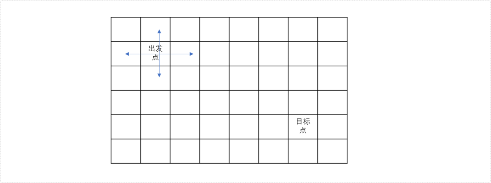
所以在搜索时，提供适当的指引，可以修正搜索一直朝最正确的方向进行，从而减少不必要的搜索。
那么如何设计指引方案，即如何设计启发式算法。
2. 启发式搜索
原始搜索算法的本质是多状态的、且盲目的，启发式搜索就是在原始搜索算法基础之上提供一盏指引方向的灯，在多路口时，尽量朝目标路口前进。这盏灯在启发式搜索中称为估价函数。
估价函数
估价函数指的是为当前点到终点之间的所有状态做出一个估计值，代表选择不同状态时的要付出的代价。
如上图的迷宫问题。
- 如果从出发点的上方或左边方向搜索，离目标点越来越远。其估计值大于实际值（出发点到目标点的实际距离）。
- 如果从出发点的下方或右边方向搜索，离目标点会越来越近。其估计值会接近实际值。
如何对一个状态（选择）进行评估呢？
一个状态的当前代价最小，只能说明从初始状态到当前状态的代价最小，不代表总的代价最小，因为余下的路还很长，未来的代价有可能更高。因此评估需要考虑两部分：当前代价和未来代价。
评估函数f(x)=g(x)+h(x)，其中，g(x)表示从初始状态到当前状态x的代价，h(x)表示从当前状态到目标状态的估价，h(x)被称为启发函数。
当前状态的代价是已知的，更多时候在意未来的路有多长，在估价函数的组成中，启发函数更具有指导性作用。
在设计估价函数时，需遵循一个基本原则：估计值必须比实际更优(估计代价<=实际代价)。
如果估计值大于实际值，则在最优解搜索路径上的状态被错误指引，从而导致非最优解搜索路径上的状态不断扩展，直至在目标状态上产生错误的答案。如上述迷宫问题时，如果估计方向朝上，则会离目标越来越远。
如果估计值不大于实际值，这个值总会比最优解更早地被取出，从而得到修正。即使得不到最优解，无非就是算的状态多了，搜索时间长一些。
常用的启发式搜索算法有很多，如：
A*（A-Star）算法，典型的启发式搜索算法。是带有评估函数的优先队列式广度优先搜索算法；是一种静态路网中求解最短路径最有效的直接搜索方法，也是解决许多搜索问题的有效算法。
A*算法使用优先队列存储当前状态下可选择的所有后续状态，优先队列的优先策略由评估函数决定，即每次从优先队列中选择出估计值最少的状态。
启发式函数的设计决定了A*算法的性能。
启发函数h(x)越接近当前状态到目标状态的实际代价h′(x)，A*算法的效率就越高。
启发函数的估值不能超过实际代价，即h(x)≤h′(x)。
如果启发式函数的值为0，则变成普通的优先队列广度搜索。
IDA*、模拟退火算法、蚁群算法、遗传算法等。
IDA*算法是带有评估函数的迭代加深DFS算法。使用评估函数避免深度搜索无止境地向深处搜索，当到达一个阈值后，停止搜索，立即回溯。
估价函数设计算法
无向图中：
- 如果图形中只允许朝上下左右四个方向移动，则可以使用曼哈顿距离。
曼哈顿距离公式=|x1-x2|+|y1-y2|
- 如果图形中允许朝八个方向移动，则可以使用对角距离。
对角距离公式：
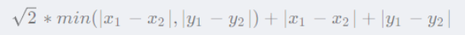
- 如果图形中允许朝任何方向移动，则可以使用欧几里得距离。
欧几里得距离公式：
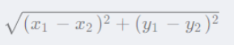
有向图中一般对反向图求终点到源点的最短距离为启发函数。
理论有了，现在开始实战。
2.1 A*算法
例题：第K短路
给定一张 N 个点（编号 1,2…N），M 条边的有向图，求从起点 S 到终点 T 的第 K 短路的长度，路径允许重复经过点或边。
注意： 每条最短路中至少要包含一条边。
输入格式
第一行包含两个整数 N 和 M。
接下来 M 行，每行包含三个整数 A,B 和 L，表示点 A 与点 B 之间存在有向边，且边长为 L。
最后一行包含三个整数 S,T 和 K，分别表示起点 S，终点 T 和第 K 短路。
输出格式
输出占一行，包含一个整数，表示第 K 短路的长度，如果第 K 短路不存在，则输出 −1。
问题分析
回顾迪杰斯特拉算法
典型的单源最短路径问题。算法较多，性能较好的是迪杰斯特拉。但是本题是求第k短路径，是否可以使用此算法求解？
至于是否能否求解，暂且放一放。来回顾一下迪杰斯特拉算法的流程，且放大流程中的细节，看是否能找到一些解决问题的蛛丝马迹。
- 构建如下的图结构。如果
s=1、t=6，即求解1-6之间的最短路径。
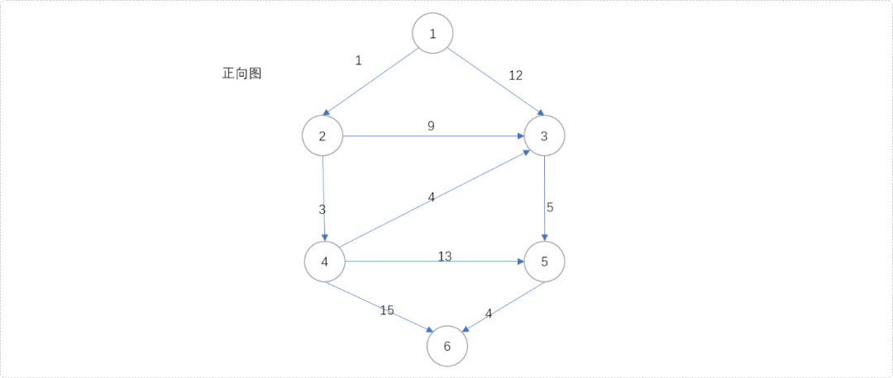
- 我这里直接使用迪杰斯特拉算法，不甚了解此算法的，可以翻阅相关文档。准备一个优先队列，用来存储节点，优先队列的策略以节点到源点的距离为参考；准备一个一张二维数组，用来存储当前节点到源点之间的最短距离。初始
dis[1][1]=0。即源点到自身的最短距离为0。
Tips：熟悉迪杰斯特拉算法的可能要问，为什么要准备一张二维数组？不急，在讲解流程中慢慢揭晓。
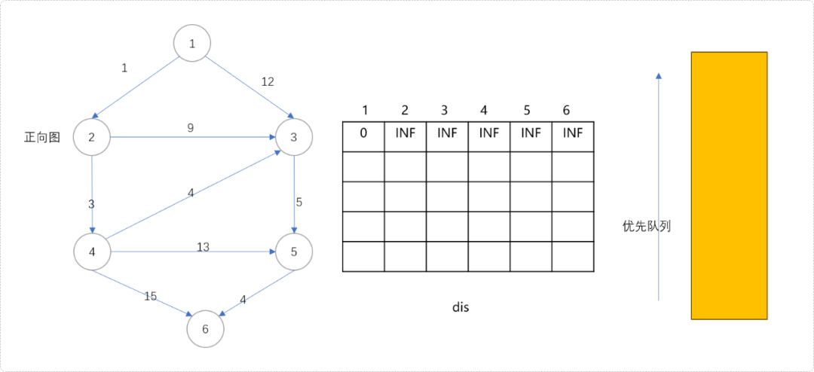
- 初始化队列。把源点
1及其最短距离0组合成一个二无信息(1,0)一起入队列。
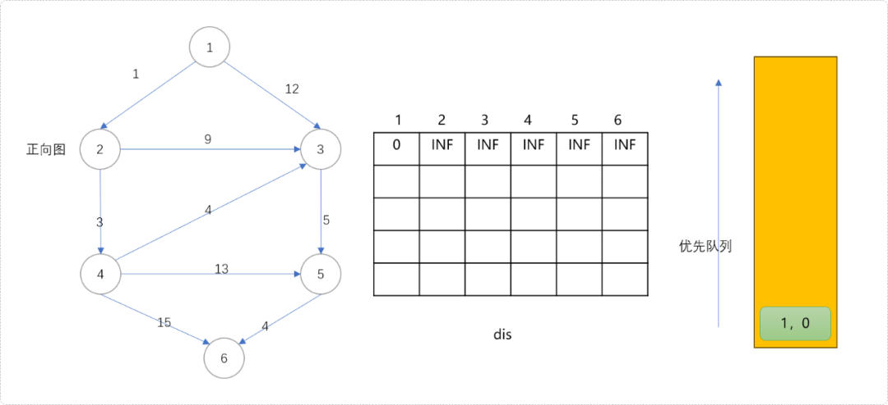
- 扩展队列，从队列中拿出头节点，扩展其子节点。扩展过程中更新子节点到源点的最短距离。节点
1可以扩展节点2和3。因节点2和3原来到源点的距离是INF，现在分别被更新为1和12。这对于节点2和3来说，这是第一次更新（最短距离并不能一步到位）。
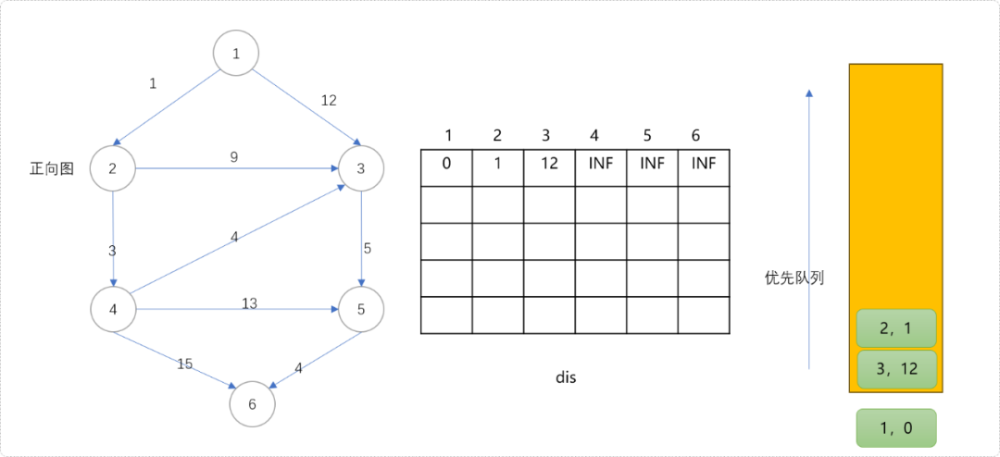
- 根据优先策略。从队列中拿出
(2,1)节点。用此节点扩展3和4节点。节点3可以更新为更短距离10，这里节点3的第2次更新。节点4被更新为4，是此节点的第一次更新。如下图所示，相信大家明白了二维数组的作用，存储每一次更新的值。
思考一下。每一次更新意味着什么？
对！通过每一次更新，逐渐逼近最短距离，而每一次被更新的值，记录着次最短或说第k短距离。
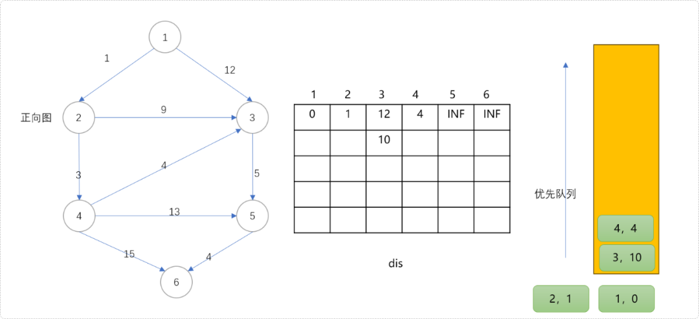
- 从队列中拿出
(4,4)节点扩展其子节点。这里得到一个结论，当节点第一次从队列中拿出后，意味着最短距离已经找到。此时节点3更新为8，节点5更新为17，节点6更新为19。
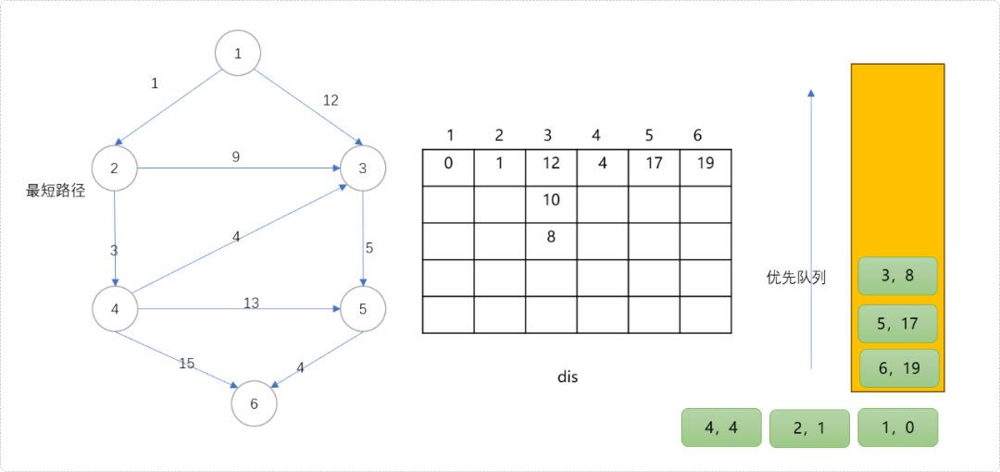
- 从队列中拿出
(3,8)节点，意味着节点3到源点1的最短距离为8；次短距离为10，次次短距离为12。是不是惊讶到你了，那么是不是可以说，迪杰斯特拉算法不仅可以求解源点至任意点的最短距离，也可以求解出源点至任意点的第K短路径？
从现在的情况来看，似乎可以这么认为，而事实是这么说是有瑕疵的，但是至少能得到解决问题的一些线索。
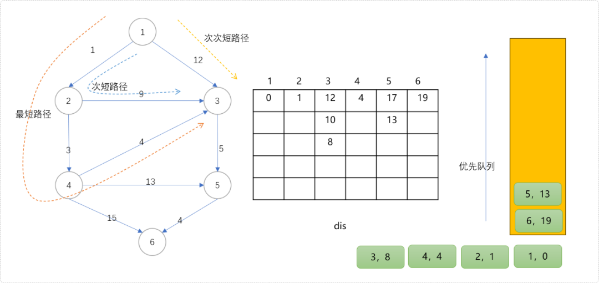
- 下图的二维数组中记录了任意点到源点的所有路径信息。
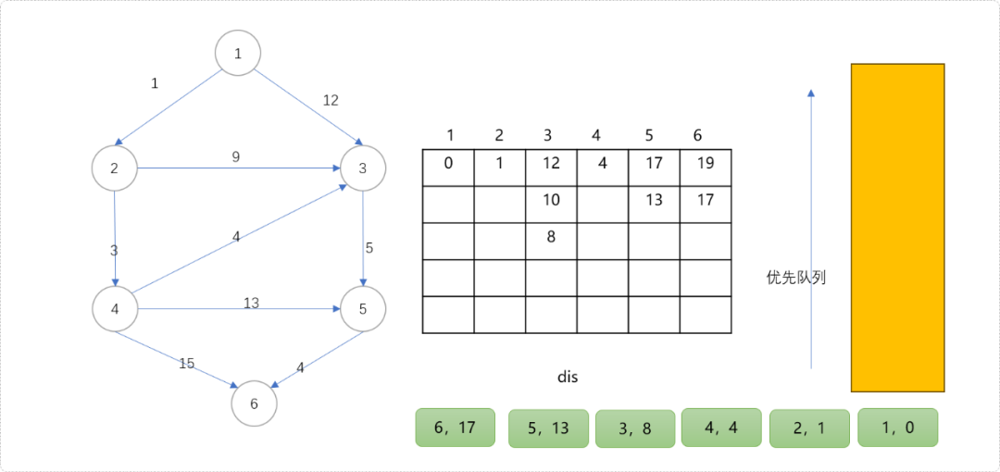
二维表上可以看出，源点至节点3有 3 条路径，直观而言，也只有3条路径。记录上看源点至节点5只有 2 条路径，而实际上不止。因为源点可以经过节点3到节点5，也就是说从源点到节点5至少有3条。
同理，源点也可以经过节点4到达节点5，至少有1条。粗算下来，源点到节点5至少应该有4条路径，距离分别为17、15、13、17。
为什么二维数组中的记录节点5的路径只有2条？
原因很简单，迪杰斯特拉算法每次试图做最优更新。如节点5当前值为13，当节点3值为10时，试图更新5号节点是不会成功的。也就得不到值为15的路径。
好了，借次机会详细介绍了迪杰斯特拉算法，仅使用此算法解决第k短路，不是说不行，感觉还是稍有些麻烦。分析到此结束，至于编码就看你的个人兴趣。
A*算法的实现流程
回归正解，计解A*算法。
前文介绍过，A*算法是有带有估计函数的优先队列。估计函数包括两个子函数，一个是当前代价函数g和启发函数h。f(x)=g(x)+h(x)。
g函数计算当前点离源点的最小代价，h函数计算当前点离目标点的预估最小代价。在扩展子节点时，选择两者和最小的子节点扩展，或者说优先队列的优先策略。可以保证搜索过程的方向正确，避免少走不必要的路。
如下图，当选择节点2后，基于搜索的盲目性，即可以向节点3方向，也可以向节点4方向。选择那一条可以减少搜索量？
从2号到3号的g值很容易计算出，1+9=10。也就是从源点到节点3的当前代价是10。
从2号到4号的g值也容易计算出，1+3=4。也就是从源点到节点4的当前代价是4。
是不是理所当然的选择4号节点进行扩展，不能这么早下结论，也许当前的代价很少，但是未来的路很长。当前的最大化利益不能说明未来的利益也是最大化的。
可以用3号和4号节点到目标点(即节点6)的最短路径作为h(x)值。如此算出现在的当前代价和未来的代价之和，方可做为最佳启发值。道理很简单，知道当前代价，也知道未来代码，两者之和，一定是到达目标点的最小代价。
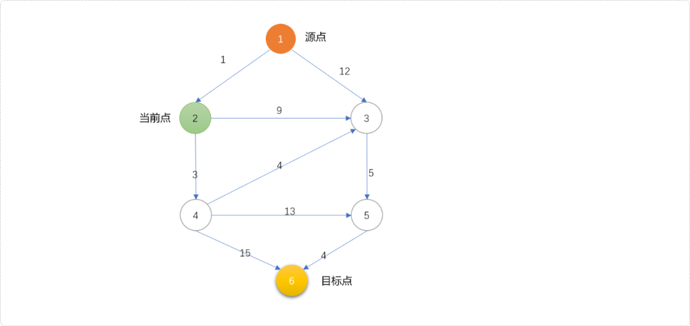
如果能计算出图中的节点到目标点的最短距离，便能得到任一点到目标点的h(x)值。这个实现简单，把原图进行反向，以目标点为源点，走一次迪杰斯特拉算法，便能计算出任意点到目标点的最短距离，用此值作为任意点到目标点的h(x)值。
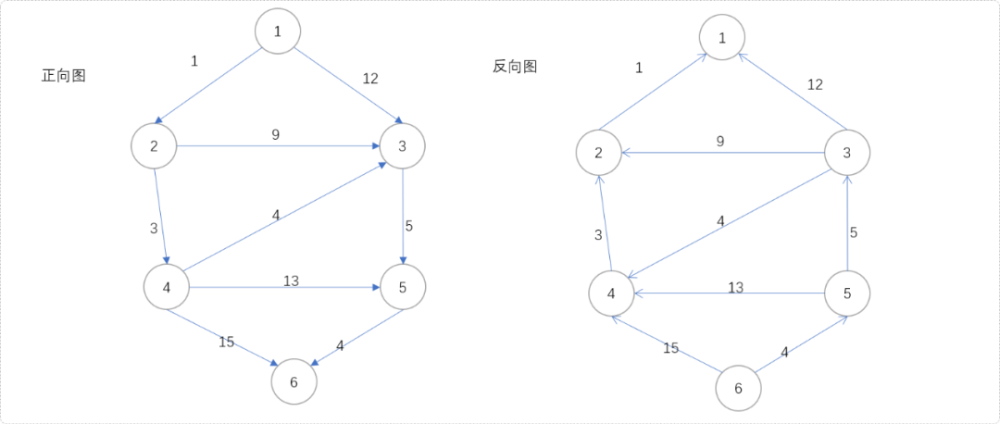
现在，让我们得到反向图中各节点到目标点之间的最短距离。
#include <bits/stdc++.h>
#define MAX 300000 + 50
#define INF 0x3f3f3f3f
using namespace std;
/*
*顶点类型
*/
struct Ver {
//编号
int vid;
//离终点的最短距离
int toDis=INF;
//离源点的最短距离
int fromDis=INF;
//正向图头指针
int head=0;
//反向图头指针
int rhead=0;
const bool operator<(const Ver & ver) const {
return this->toDis>ver.toDis;
}
} vers[MAX];
//顶点和边数
int n,m;
//边类型
struct Edge {
//邻接点
int to;
//下一个边
int nex;
//权重值
int val;
} edges[MAX];
//边索引
int tot=0;
//添加边
void addEdge(int type,int f, int t, int w) {
edges[++tot].to = t;
edges[tot].val = w;
if(type==0) {
//正向边
edges[tot].nex = vers[f].head;
vers[f].head= tot;
} else {
//反向边
edges[tot].nex = vers[f].rhead;
vers[f].rhead= tot;
}
}
//构建正向图和反向图
void buildGraph() {
for( int i=1; i<=n; i++ )vers[i].vid=i;
int f,t,w;
for(int i = 1; i <= m; ++i) {
cin >> f >> t >> w;
addEdge(0,f,t,w);
addEdge(1,t,f,w);
}
}
/*
*
*对原图的反图求各节点到目标节点的最短距离
*/
void dijkstra(int s) {
//优先队列
priority_queue<Ver> priQue;
vers[s].toDis=0;
//初如化队列
priQue.push( vers[s] );
while( !priQue.empty() ) {
//取头顶点
Ver u=priQue.top();
//删除头顶点
priQue.pop();
//扩展子节点
for( int i=u.rhead; i!=0; i=edges[i].nex ) {
Ver v=vers[ edges[i].to ];
if( v.toDis> edges[i].val+u.toDis ) {
//更新
v.toDis= edges[i].val+u.toDis;
vers[ edges[i].to ]=v;
priQue.push(v);
}
}
}
}
void show() {
for(int i=1; i<=n; i++) {
cout<<vers[i].vid<<"\t"<<vers[i].toDis<<endl;
}
}
int main() {
cin>>n>>m;
buildGraph();
dijkstra(6);
show();
return 0;
}
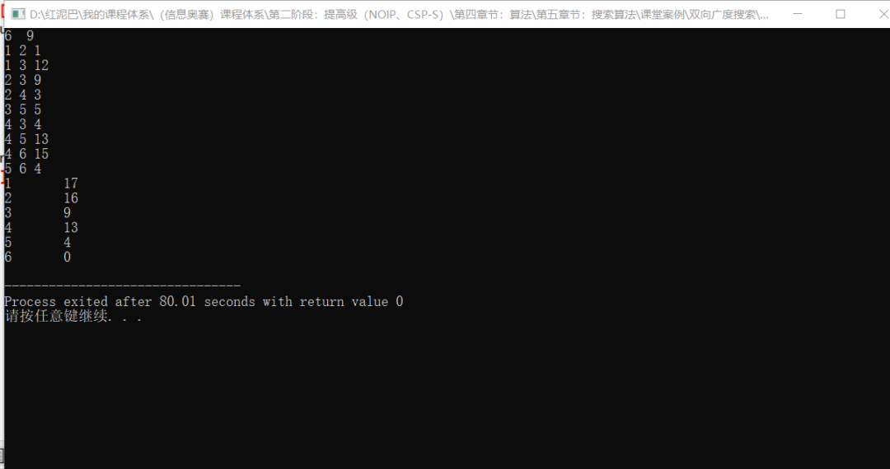
根据计算结果，可知节点3的g(3)+h(3)=10+9=19；节点4的g(4)+h(4)=4+13=17。显然，选择节点4更接近目标点。
知道了优先策略以及计算方式。下面具体演示，看如何得到最终结果。
- 准备好优先队列。用节点、节点离源点距离、节点离目标点的距离三元素构建一个三元信息组，存入队列。初始存入节点
1的三元信息(1,0,0)。
Tips： 如果节点
1到节点6的最短距离为INF，则表示两者之间没有路径。
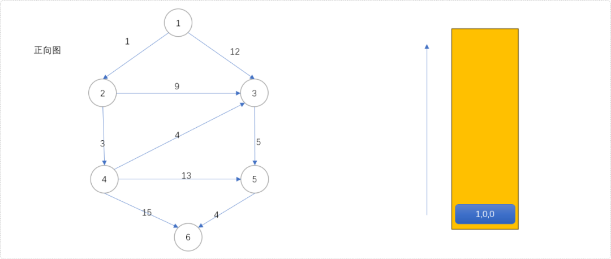
(1,0,0)出队列，扩展2、3号节点，分别计算2、3号节点的三元组信息(2,1,16)、(3,12,9)且压入队列。
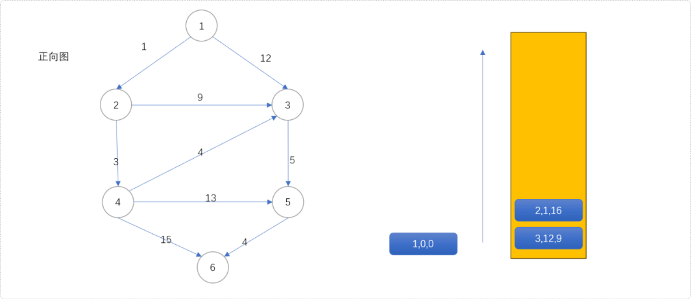
- 根据优先策略，
(2,1,16)第一次出队列，其值1+16=17即为源点经过节点2到目标点的最短距离，扩展(3,10,9)和(4,4,13)。
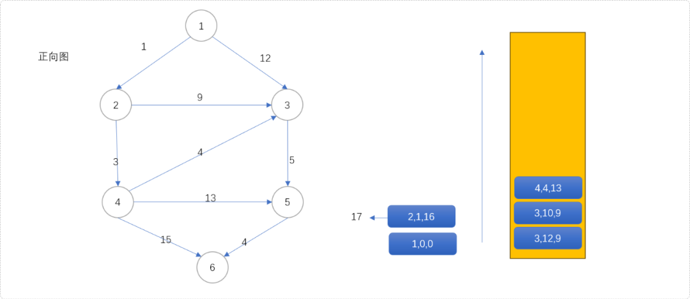
(4,4,13)出队列，得到源点经过4到达目标点的最短距离为17。扩展(3,8,9)、(5,17,4)、(6,19,0)。从下图可知，节点3会入队列三次。因为节点3有三个入度，意味着有三个节点可以经过它进入下一个位置，即有三次扩展机会。
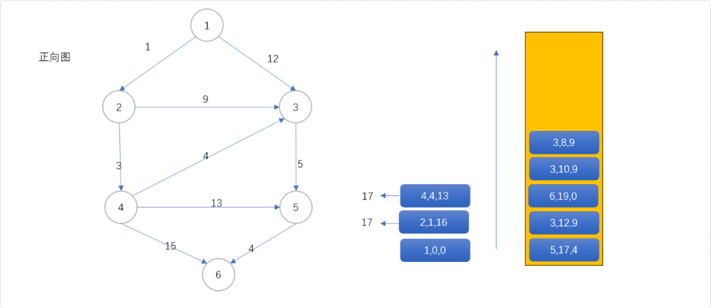
(3,8,9)第一次出队列，意味着源点经过3号节点到达目标点的最短距离为17。原因很简单，根据队列的优先策略，只有当g(x)+h(x)值最小时，才有机会出队列，而这两个值，一个表示离源点最优值，一个是表示离目标点的最优值，两者之和一定是源点经过此点到达目标点的最优值。此时，扩展(5,13,4)入队列。
观察可得，节点3会出队列三次，同时扩展节点5进入三次队列，这样，不会漏掉任何一条路径。在迪杰斯特拉算法中，如果节点3当前值为15，扩展后的值为17，是不会再入队列的，迪杰斯特拉算法中存储的永远是比上一次更优的值。
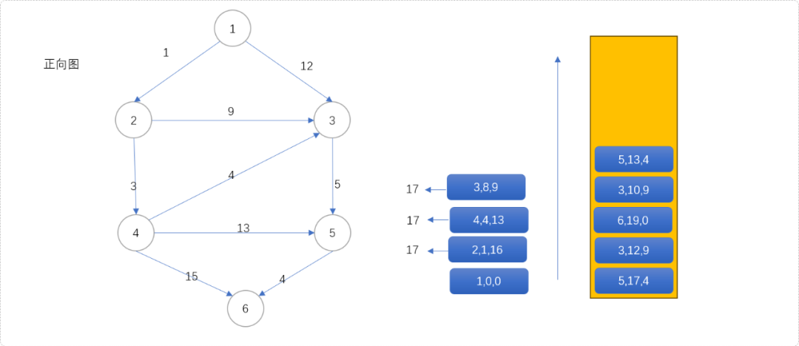
(5,13,4)第一次出队列，得到源点经过5到达目标点的最短距离是17。同时扩展(6,17,0)入队列。
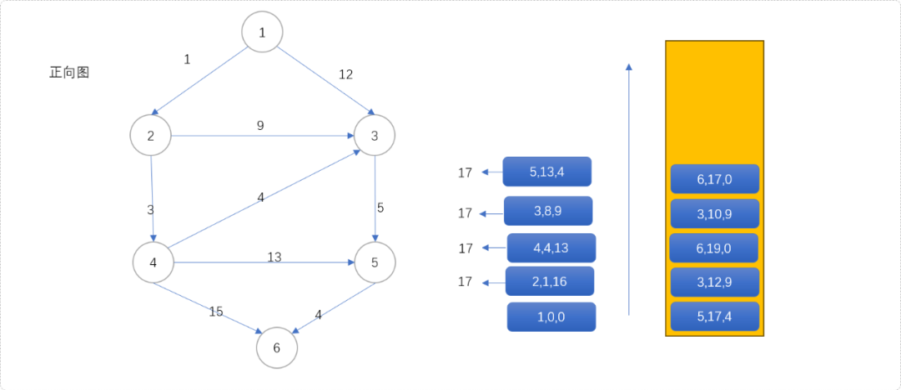
(6,17,0)第一次出队列，源点到目标点的最短距离为17。
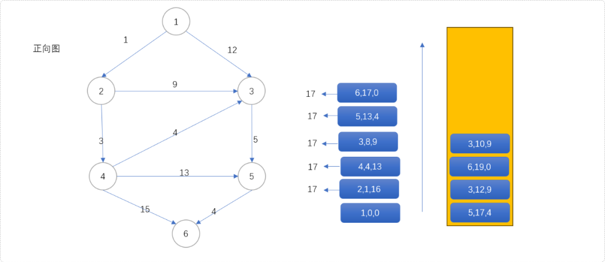
(3,10,9)第二次出队列，则得到源点经过3到达目标点的次短距离为19。
(6,19,0)第二次出队列时，得到源点到目标点次最短距离为19，其实和前分析迪杰斯特拉算法的更新信息是一致的。只是迪杰斯特拉算法会漏掉一些路径，A*算法不会。
如下图是当整个算法结束后得到的出队结果，可以看到节点5入了4次队列，出了4次队列。说明源点经过节点5到少有4条不同路径到达目标点。分别是1->3->5->6、1->2->3->5->6、1->2->4->3->5->6、1->2->4->5->6。
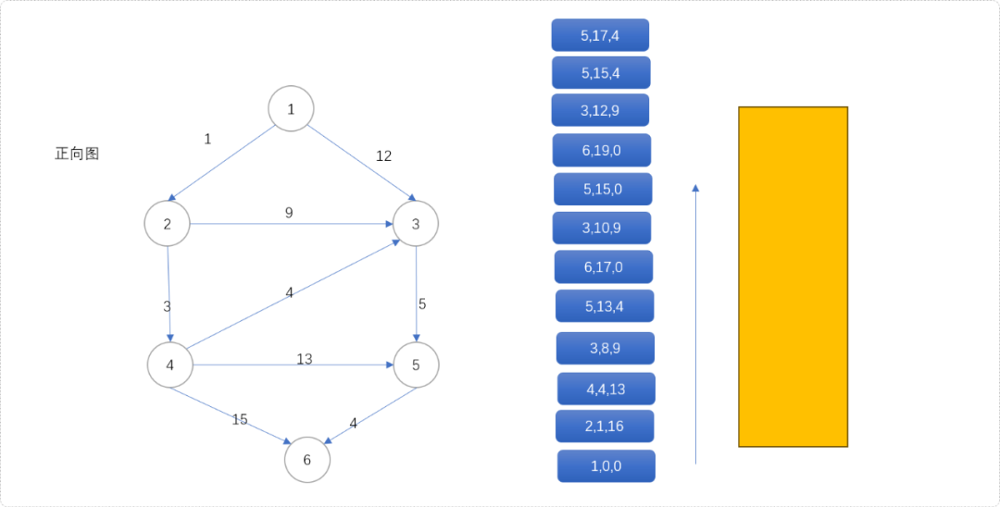
通过上述分析，可以得到一个结论：
当目标节点从队列中第i次出队时，就是离源点的第i次最短距离。
完整代码如下所示：
#include <bits/stdc++.h>
#define MAX 300000 + 50
#define INF 0x3f3f3f3f
using namespace std;
/*
*顶点类型
*/
struct Ver {
//编号
int vid;
//离终点的最短距离
int toDis=INF;
//离源点的最短距离
int fromDis=INF;
//正向图头指针
int head=0;
//反向图头指针
int rhead=0;
const bool operator<(const Ver & ver) const {
return this->toDis>ver.toDis;
}
} vers[MAX];
//顶点和边数
int n,m;
//边类型
struct Edge {
//邻接点
int to;
//下一个边
int nex;
//权重值
int val;
} edges[MAX];
//边索引
int tot=0;
//添加正向边
void addEdge(int type,int f, int t, int w) {
edges[++tot].to = t;
edges[tot].val = w;
if(type==0) {
edges[tot].nex = vers[f].head;
vers[f].head= tot;
} else {
edges[tot].nex = vers[f].rhead;
vers[f].rhead= tot;
}
}
//构建图
void buildGraph() {
for( int i=1; i<=n; i++ )vers[i].vid=i;
int f,t,w;
for(int i = 1; i <= m; ++i) {
cin >> f >> t >> w;
addEdge(0,f,t,w);
addEdge(1,t,f,w);
}
}
/*
*
*对原图的反图求各节点到目标节点的最短距离
*/
void dijkstra(int s) {
//优先队列
priority_queue<Ver> priQue;
vers[s].toDis=0;
//初如化队列
priQue.push( vers[s] );
while( !priQue.empty() ) {
//取头顶点
Ver u=priQue.top();
//删除头顶点
priQue.pop();
//扩展子节点
for( int i=u.rhead; i!=0; i=edges[i].nex ) {
Ver v=vers[ edges[i].to ];
if( v.toDis> edges[i].val+u.toDis ) {
//更新
v.toDis= edges[i].val+u.toDis;
vers[ edges[i].to ]=v;
priQue.push(v);
}
}
}
}
template<typename T>
struct Cmp {
bool operator()(T & ver1,T & ver2) {
return ver1.fromDis+ver1.toDis>ver2.fromDis+ver2.toDis;
}
};
//A* 算法
int nums[MAX]= {0};
int astar(int s,int e,int k) {
//对反向图求最短距离
dijkstra(e);
//初始化计时器
if(vers[s].toDis==INF)return -1;
for(int i=1; i<=n; i++)nums[i]=0;
priority_queue<Ver,vector<Ver>,Cmp<Ver>> myq;
//初始化队列
vers[s].fromDis=0;
vers[s].toDis=0;
myq.push(vers[s]);
while( !myq.empty() ) {
//出队列
Ver u=myq.top();
myq.pop();
//计算节点出队列的次数
nums[u.vid]++;
//如果次数和k值相同，且当前出队列节点是目标节点
if( nums[u.vid]==k && u.vid==e ) {
//找到答案
return u.fromDis+u.toDis;
}
//如果计数器值大于K
if( nums[u.vid]>k )continue;
//扩展子节点
for( int i=u.head; i!=0; i=edges[i].nex ) {
Ver v=vers[ edges[i].to ];
v.fromDis=edges[i].val+u.fromDis;
vers[ edges[i].to ]=v;
myq.push(v);
}
}
return -1;
}
void show() {
for(int i=1; i<=n; i++) {
cout<<vers[i].vid<<"\t"<<vers[i].toDis<<endl;
}
}
int main() {
cin>>n>>m;
buildGraph();
int res= astar(1,6,3);
cout<<res;
// show();
return 0;
}
3. 总结
本文讲解有向图如何使用A*算法。记住，当选择很多时，预估出每一个选择要付出的代价，可以减少不必要的损失。人生如此，代码如此。